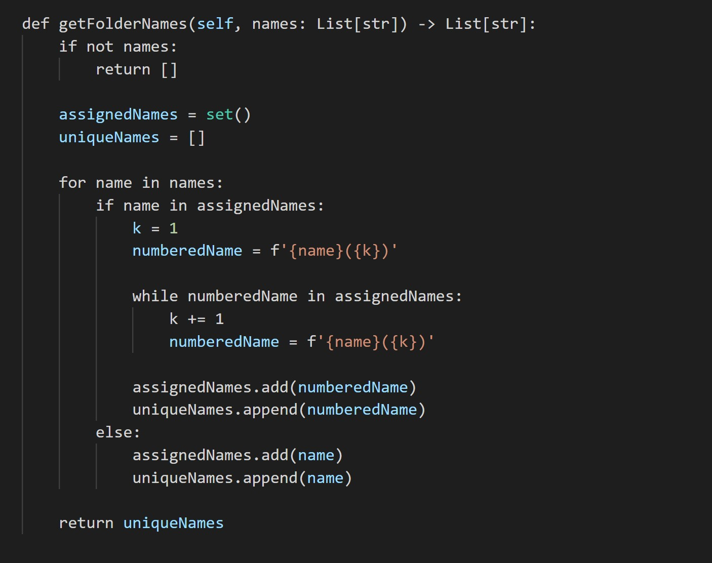

March 2021
Table of Contents
- 4. Median of Two Sorted Arrays
- 98. Validate Binary Search Tree
- 151. Reverse Words in a String
- 179. Largest Number
- 223. Rectangle Area
- 231. Power of Two
- 268. Missing Number
- 287. Find the Duplicate Number
- 448. Find All Numbers Disappeared in an Array
- 669. Trim a Binary Search Tree
- 910. Smallest Range II
- 961. N-Repeated Element in Size 2N Array
- 1051. Height Checker
- 1395. Count Number of Teams
- 1487. Making File Names Unique
- 1769. Minimum Number of Operations to Move All Balls to Each Box
4. Median of Two Sorted Arrays
Given two sorted arrays nums1 and nums2 of size m and n respectively, return the median of the two sorted arrays.
98. Validate Binary Search Tree
Given two sorted arrays nums1 and nums2 of size m and n respectively, return the median of the two sorted arrays.
Runtime: 88 ms, faster than 78.93%
Memory Usage: 42.5 MB, less than 76.13%
151. Reverse Words in a String
Given an input string s, reverse the order of the words. A word is defined as a sequence of non-space characters. The words in s will be separated by at least one space. Return a string of the words in reverse order concatenated by a single space.
Note that s may contain leading or trailing spaces or multiple spaces between two words. The returned string should only have a single space separating the words. Do not include any extra spaces.
179. Largest Number
Given a list of non-negative integers nums, arrange them such that they form the largest number. Note: The result may be very large, so you need to return a string instead of an integer.
Runtime: 72 ms, faster than 99.15% of JavaScript online submissions for Largest Number.
223. Rectangle Area
Given the coordinates of two rectilinear rectangles in a 2D plane, return the total area covered by the two rectangles. The first rectangle is defined by its bottom-left corner (A, B) and its top-right corner (C, D). The second rectangle is defined by its bottom-left corner (E, F) and its top-right corner (G, H).
Runtime: 136 ms, faster than 94.06% of JavaScript online submissions for Rectangle Area.
231. Power of Two
Given an integer n, return true if it is a power of two. Otherwise, return false. An integer n is a power of two, if there exists an integer x such that n == 2x.
268. Missing Number
Given an array nums containing n distinct numbers in the range [0, n], return the only number in the range that is missing from the array.
287. Find the Duplicate Number
Given an array of integers nums containing n + 1 integers where each integer is in the range [1, n] inclusive.There is only one repeated number in nums, return this repeated number.
448. Find All Numbers Disappeared in an Array
Given an array of integers where 1 ≤ a[i] ≤ n (n = size of array), some elements appear twice and others appear once. Find all the elements of [1, n] inclusive that do not appear in this array.
669. Trim a Binary Search Tree
Given the root of a binary search tree and the lowest and highest boundaries as low and high, trim the tree so that all its elements lies in [low, high]. Trimming the tree should not change the relative structure of the elements that will remain in the tree (i.e., any node's descendant should remain a descendant). It can be proven that there is a unique answer.
Return the root of the trimmed binary search tree. Note that the root may change depending on the given bounds.
910. Smallest Range II
Given an array A of integers, for each integer A[i] we need to choose either x = -K or x = K, and add x to A[i] (only once). After this process, we have some array B.
Return the smallest possible difference between the maximum value of B and the minimum value of B.
961. N-Repeated Element in Size 2N Array
In a array A of size 2N, there are N+1 unique elements, and exactly one of these elements is repeated N times. Return the element repeated N times.
Runtime: 0 ms, faster than 100.00% of Java online submissions for N-Repeated Element in Size 2N Array.
Memory Usage: 39.7 MB, less than 64.57% of Java online submissions for N-Repeated Element in Size 2N Array.
1051. Height Checker
Students are asked to stand in non-decreasing order of heights for an annual photo. Return the minimum number of students that must move in order for all students to be standing in non-decreasing order of height. Notice that when a group of students is selected they can reorder in any possible way between themselves and the non selected students remain on their seats.
1395. Count Number of Teams
There are n soldiers standing in a line. Each soldier is assigned a unique rating value. You have to form a team of 3 soldiers amongst them under the following rules: Choose 3 soldiers with index (i, j, k) with rating (rating[i], rating[j], rating[k]). A team is valid if: (rating[i] < rating[j] < rating[k]) or (rating[i] > rating[j] > rating[k]) where (0 <= i < j < k < n).
Return the number of teams you can form given the conditions. (soldiers can be part of multiple teams).
Runtime: 840 ms, faster than 80.14% of Python3 online submissions for Count Number of Teams.
Memory Usage: 14.5 MB, less than 58.54% of Python3 online submissions for Count Number of Teams.
1487. Making File Names Unique
Given an array of strings names of size n. You will create n folders in your file system such that, at the ith minute, you will create a folder with the name names[i]. Since two files cannot have the same name, if you enter a folder name which is previously used, the system will have a suffix addition to its name in the form of (k), where, k is the smallest positive integer such that the obtained name remains unique.
Return an array of strings of length n where ans[i] is the actual name the system will assign to the ith folder when you create it.
Memory Usage: 27 MB, less than 79.84% of Python3 online submissions for Making File Names Unique.
1769. Minimum Number of Operations to Move All Balls to Each Box
You have n boxes. You are given a binary string boxes of length n, where boxes[i] is '0' if the ith box is empty, and '1' if it contains one ball. In one operation, you can move one ball from a box to an adjacent box. Box i is adjacent to box j if abs(i - j) == 1. Note that after doing so, there may be more than one ball in some boxes. Return an array answer of size n, where answer[i] is the minimum number of operations needed to move all the balls to the ith box. Each answer[i] is calculated considering the initial state of the boxes.
Runtime: 88 ms, faster than 100.00%
Memory Usage: 42.6 MB, less than 100.00%